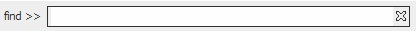

Use the search bar to find a specific node in a cluttered network. The bar is in the bottom right-hand corner of the interface.

Use either Ctrl + F or mouse click to focus in the search field. Type in the Node Label you are looking for, and it will select the node in the interface.
1. Right click on a desired node. You will see the following:
a. A drop down menu will appear with multiple options
b. Ties related to the selected node will become colored. The colors correspond to the type of link. Outgoing links are red,
incoming links are green, and mutual links are blue.
2. Use the menu to navigate the options you would like to select. Click on the desired depth (originating from that node) to show a smaller version of the original network based around this focal node. If you would like a depth greater than 4, click on ‘Other’ and specify a larger number.
Filter Relations Based upon one Node
Right click on a desired node. You will see a drop down menu as shown in Node Filtering by Depth . To filter by incoming, outgoing, mutual, or undirected links, click on ‘Show Selected Link.’ This window below will appear. Check the ties you would like to show and click 'Show'. The network will be filtered accordingly.
Filter Relations Based upon multiple Nodes
Select multiple desired nodes (see Node Selection and Deselection ). Right click on one of the nodes, the window below will appear. Choose to filter all links, mutual links, or undirected links, then click on ‘Show’.
Click on a legend image on the legend pane, the window below will appear for you to select a desired color.
Click the OK button, the color of nodes/edges for this type will be automatically changed to your selected color.
Node Selection and Deselection
Select one Node: just click the node you want to select.
Select multiple Nodes one by one: Hold "Ctrl" key and select nodes one by one.
Select multiple Nodes by rectangular area: Click and drag the mouse, you can select a rectangular area of the screen. All the nodes inside the area will be selected.
Deselect node(s): Click any blank space on the screen to release the selected node(s).
Any edge(s) between two nodes can be hidden. Right clicking on an edge between two nodes triggers the following small window:
Select the edge(s) you want to hide, then click the "Hide" button.
For the online Visualizer, it is possible to double click on a specific node to see all its unique attributes. You will see a screen similar to the following:
For the online Visualizer, if you click on an edge between two nodes, you will see a screen similar to the following:
Click on an edge, you will see a screen that shows all edges and their unique attribute information:
To obtain technical support, please send email to: ciknow@northwestern.edu